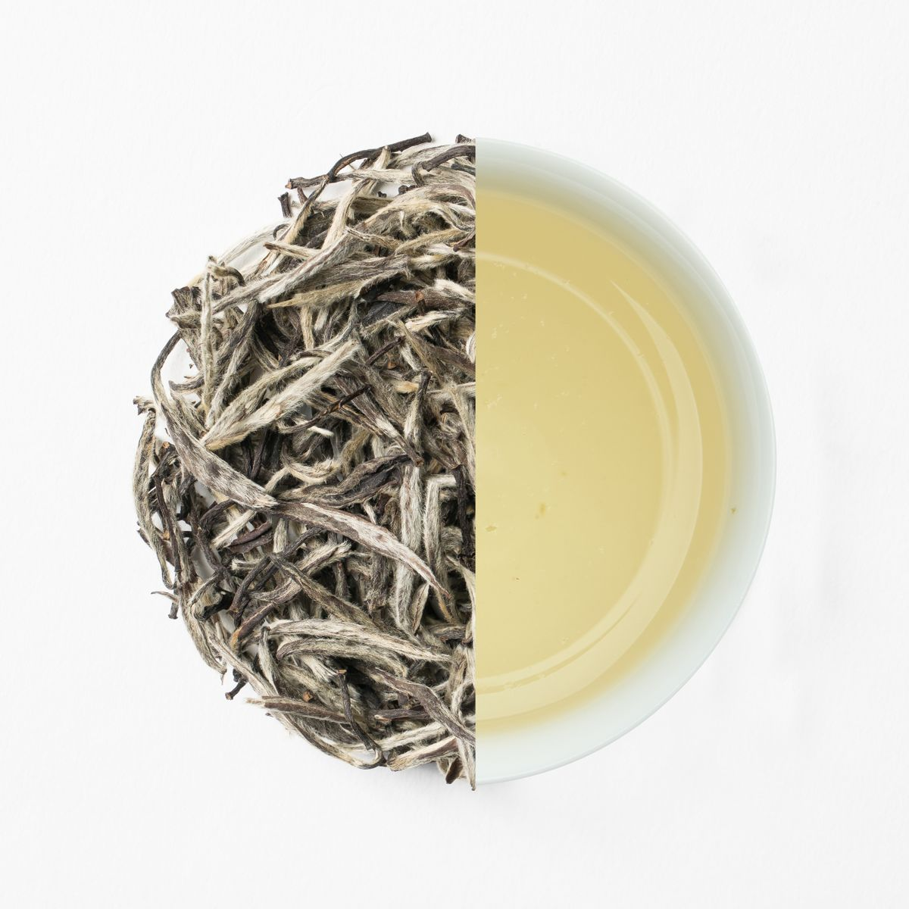
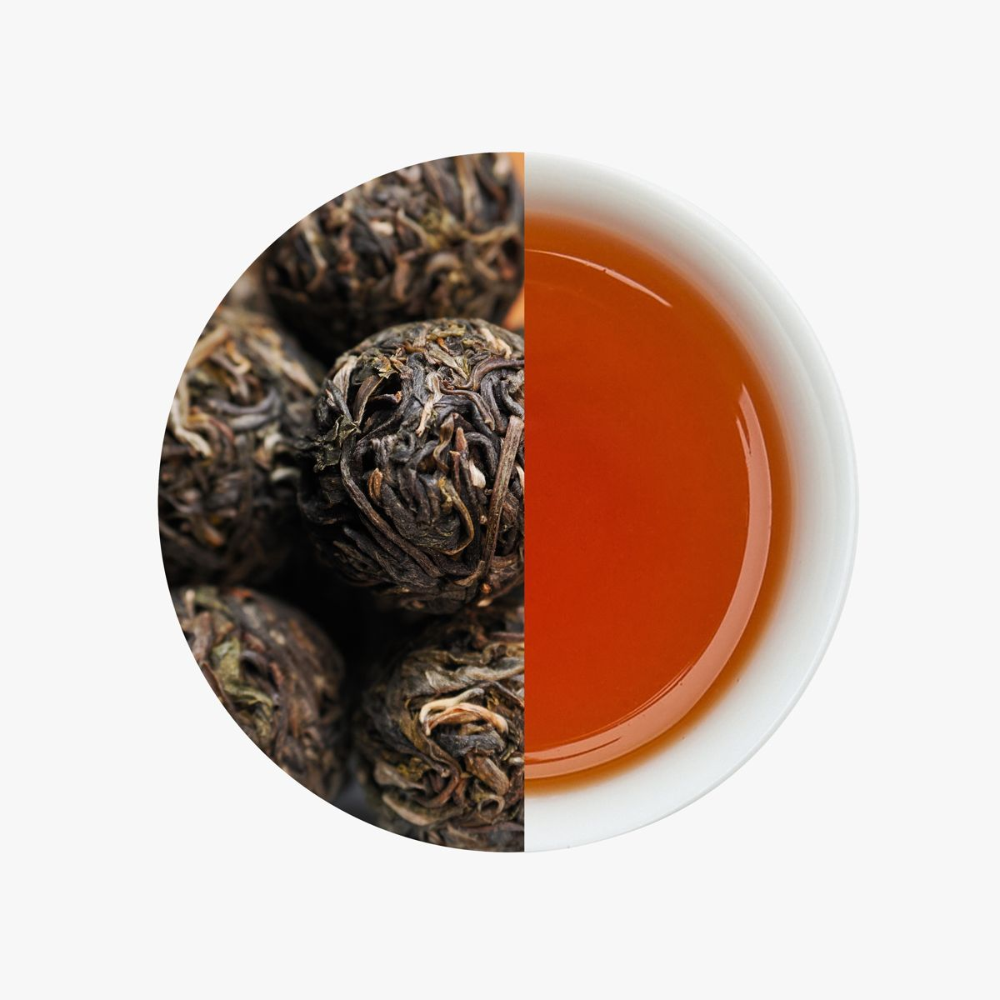
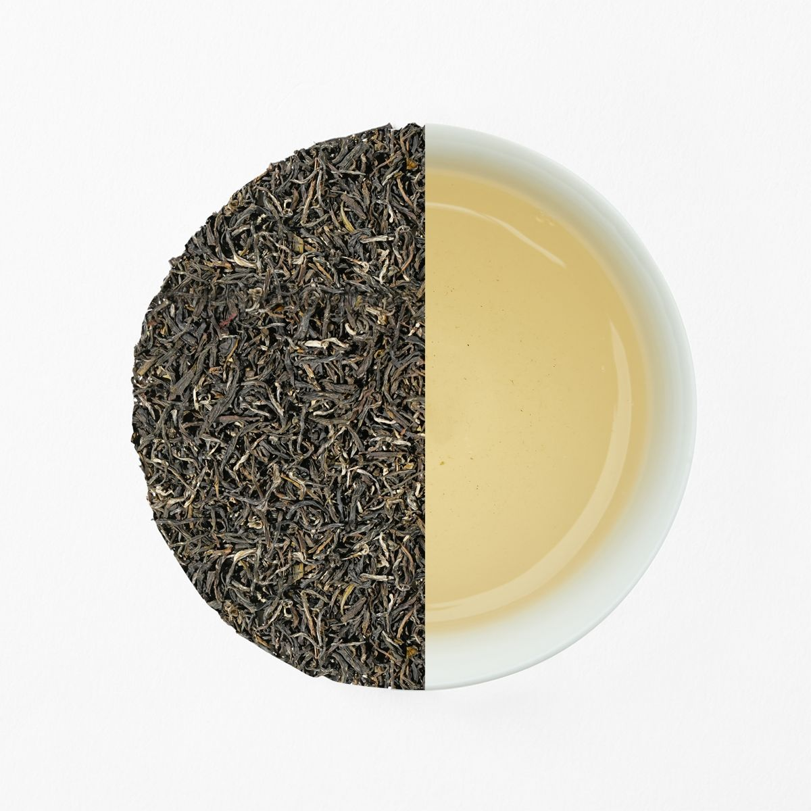
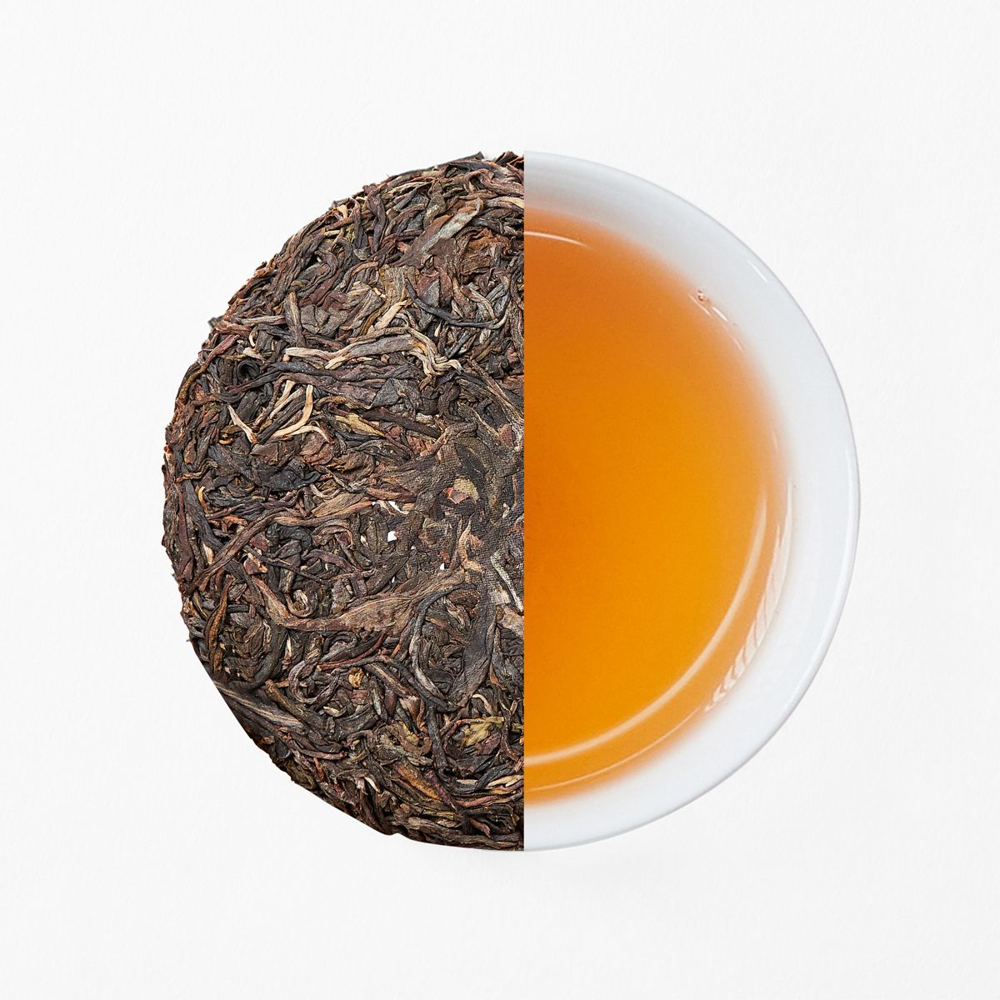

White Tea 白茶
Delicate, minimally processed white tea with a light, sweet and mellow cup.
清新雅致的白茶，工艺简约，茶汤清甜柔和。

Compressed Tea 紧压茶
Traditional pressed tea that deepens with age, brewing a rich amber liquor.
传统紧压工艺，越陈越香，茶汤琥珀红亮、醇厚。

Tea Bags 袋泡茶
Convenient tea bags for an easy, quality cup at home, at work or on the go.
便捷袋泡茶，居家、办公、出行随时享用一杯好茶。

Classic Tea 经典茶
Our classic everyday loose-leaf tea with a smooth, balanced flavour.
经典日常散茶，口感顺滑均衡。
Available soon in the TeaFairy World app — 即将在 TeaFairy World App 上线。